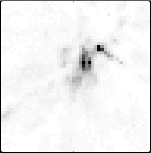

· Meet the GA team

· Research Activites

· Publications

· Ozlens 2008

· Join Us!
The theory of General Relativity is close to 100 years old and has been the preferred theory of gravity since its formulation by Einstein. Despite this, the understanding of General Relativity is not as advanced as might be expected, with few formal solutions existing and the physical interpretation of some of the mathematical results being unclear. The Gravitational Astrophysics group conducts research into fundamental concepts in GR including the meaning and nature of expanding space and accelerated paths into black holes.
Numerical Cosmology
Members of our group study the implications of various dark energy models on the formation and evolution of the universe's large scale structure, primarily through N-body simulations, in order to increase the theoretical understanding of dark energy physics required in order to maximise the effectiveness of future surveys and instruments.
Gravitational Lensing
Einstein showed how massive objects can deflect the path of a light beam as it traverses the universe, and members of the group use this gravitational lensing to uncover astrophysical secrets. This includes employing Bayesian techniques to reveal the dark matter distribution of distant galaxies, and employing lenses as a natural microscope to see structure in young star formaing galaxies.Also, the group studies the action of individual stars in the phenomenon of gravitational microlensing to see the heart of quasars, the most powerful galaxies in the universe. A new program underway will trace the weak gravitational lensing of light rays as they pass through the universe.
Galactic Structure
Recent observations of our own Milky Way and other nearby galaxies reveal a wealth of unexpected structure. It is thought that many of these represent the debris from smaller galaxies that were cannibalised by the larger systems. Members of the group undertake both observational and theoretical studies of many prominent as aspects of this structure, including the Canis Major Dwarf Galaxy and the Monoceros Ring which encircles the Milky Way. We are also members of a leading collaboration which will provide an unprecedented map of the structure in the halo of our nearest companion, the Andromeda Galaxy.